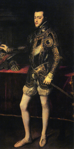
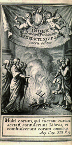
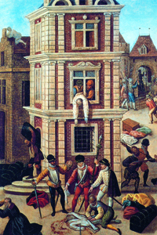

Lezione 12  Riforma e controriforma
Riforma e controriforma

-
285
120
-
240
320
-
160
190
-
130
260
-
80
240
-
170
150

SPAGNA
Nel 1556 Filippo II, figlio di Carlo V, sale al trono. Fervente cattolico, intollerante, cupo, è considerato la vera “spada della Controriforma”. Ricorre, come già aveva fatto il padre, al magistrale pennello di Tiziano Vecellio per farsi ritrarre nel 1551.
ROMA
Tra gli strumenti che la Chiesa cattolica adotta per combattere la diffusione del protestantesimo vi è l’Index librorum prohibitorum, ovvero l’indice dei libri proibiti. Pubblicato dal papato nel 1557, è un elenco costantemente aggiornato di autori e opere la cui lettura è vietata, in quanto ritenuti libri pericolosi. In questa pagina di un’edizione settecentesca vediamo un’incisione con un rogo di libri, che riecheggia il rogo della bolla papale compiuto da Lutero negli anni Venti del Cinquecento.
PARIGI
1560-1598: Guerre di religione in Francia. Particolarmente significativo l’episodio accaduto a Parigi nella notte tra il 23 e il 24 agosto 1572. Conosciuta come “Notte di San Bartolomeo”, vede il massacro di moltissimi ugonotti ad opera dei partigiani del duca di Guisa. In questo particolare di un dipinto di François Dubois vediamo una scena dei cruenti combattimenti.AUGUSTA
L’imperatore Carlo V firma nel 1555 la Pace di Augusta, che segna la fine dell’unità cristiana dell’Occidente: sancisce il riconoscimento dei protestanti in Germania e la suddivisione del Sacro romano impero in due osservanze religiose. La Germania diventa biconfessionale, e i principi tedeschi sono liberi di scegliere la confessione religiosa nelle loro terre, all’interno delle quali impongono però uniformità religiosa.OLANDA
1566-1581: Indipendenza della Repubblica delle Province Unite. L’Olanda diventa patria della tolleranza e del pluralismo religioso, poichè lo Stato olandese è laico e neutrale.NANTES
1598: Editto di Nantes.Enrico di Borbone, protestante, si converte al cattolicesimo e sposa Maria de’ Medici, cattolica. Diventa re (Enrico IV) ed è riconosciuto dall’intera nazione. Emana l’Editto di Nantes, che pone fine alle guerre di religione francesi poiché assicura agli ugonotti piena libertà di culto e di riunione, e riconosce il cattolicesimo come religione di stato.